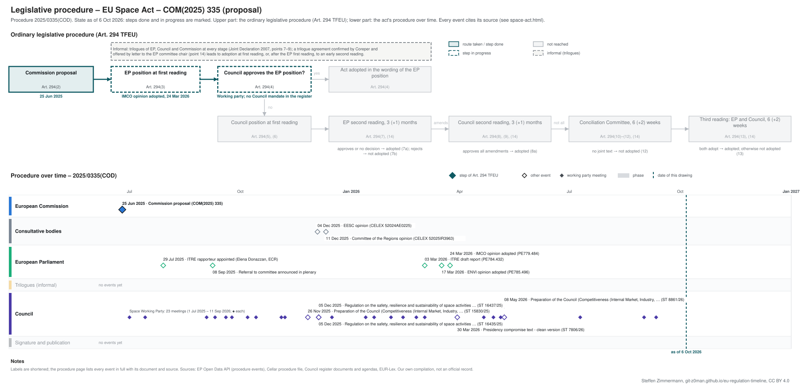

← Regulation timeline › EU Space Act › Legislative procedure · All procedures
EU Space Act – COM(2025) 335 (proposal)
Procedure 2025/0335(COD), ongoing, as of 23 Oct 2026. Drawing: SVG · PNG · PDF (A3) · draw.io · Page as Markdown: space-act.md


| Stage | EP committee stage |
|---|---|
| Parliament | draft report 3 Mar 2026 |
| Council | working party, latest document 1 Sep 2026 |
| Latest activity | 11 Sep 2026 · Council: Space Working Party meeting (morning only): Exchange of views (7806/26) (CM 3999/26) |
| Next steps | EP: amendments and committee vote on the report and mandate; Council: working party towards a negotiating mandate |

European Parliament committees
| Committee | Role | Rapporteur | Shadow rapporteurs |
|---|---|---|---|
| ITRE Industry, Research and Energy | Responsible | Elena Donazzan (ECR), appointed 29 Jul 2025 | Angelika Niebler (EPP), Giorgio Gori (S&D), András Gyürk (PfE), Christophe Grudler (Renew), Sergey Lagodinsky (Greens/EFA), Marina Mesure (The Left), Sarah Knafo (ESN) |
| ENVI Environment, Climate and Food Safety | Opinion | Pierfrancesco Maran (S&D), appointed 24 Feb 2026 | Sirpa Pietikäinen (EPP), Mathilde Androuët (PfE), Pietro Fiocchi (ECR), Katri Kulmuni (Renew), Rasmus Nordqvist (Greens/EFA), Sebastian Everding (The Left) |
| IMCO Internal Market and Consumer Protection | Opinion | François Kalfon (S&D), appointed 30 Sep 2025 | Tomáš Zdechovský (EPP), Ivars Ijabs (Renew) |
Source: EP Open Data API (participations) and the Legislative Observatory (joint committee, opinions declined); names link to each Member's page on the EP website. The API names no committee for shadow rapporteurs; they are assigned by the EP's order of participants, which groups each committee.
Events
| Date | Actor | Event | Document | Source |
|---|---|---|---|---|
| 25 Jun 2025 | European Commission | Commission proposal (Art. 294(2) TFEU) | COM(2025) 335 · en.md de.md | Cellar (CELEX 52025PC0335) |
| 1 Jul 2025 | Council | Space Working Party meeting (ATTACHES): Presentation by the Commission (doc. ) (10935/25+ADD 1); Impact … | CM 3393/25 REV 1 | Council register, CM 3393/25 REV 1 (notice of meeting and provisional agenda) |
| 14 Jul 2025 | Council | Space Working Party meeting (morning only on Tuesday 15 July): Presentation by the Commission (doc. ) … | CM 3597/25 | Council register, CM 3597/25 (notice of meeting and provisional agenda) |
| 29 Jul 2025 | European Parliament | ITRE rapporteur appointed (Elena Donazzan, ECR) | EP procedure file | EP Open Data API, procedure 2025-0335 (participation RAPPORTEUR) |
| 3 Sep 2025 | Council | Space Working Party meeting: Exchange of views (doc. ) (10935/25+ADD 1) | CM 3839/25 REV 1 | Council register, CM 3839/25 REV 1 (notice of meeting and provisional agenda) |
| 8 Sep 2025 | European Parliament | Referral to committee announced in plenary | EP procedure file | EP Open Data API, procedure 2025-0335 (referral) |
| 10 Sep 2025 | Council | Space Working Party meeting - Attaches level on 10 September: Presentation by the Commission Examination … | CM 3896/25 REV 1 | Council register, CM 3896/25 REV 1 (notice of meeting and provisional agenda) |
| 19 Sep 2025 | Council | Space Working Party meeting (full day meeting - Attaches level in the: Presentation by the Commission … | CM 4053/25 REV 1 | Council register, CM 4053/25 REV 1 (notice of meeting and provisional agenda) |
| 24 Sep 2025 | Council | Space Working Party meeting: Impact assessment – Presentation by the Commission (doc. ADD 2-5) (10935/25); … | CM 4118/25 REV 1 | Council register, CM 4118/25 REV 1 (notice of meeting and provisional agenda) |
| 7 Oct 2025 | Council | Space Working Party meeting (ATTACHES): Presentation by the Commission (10935/25+ADD 1) | CM 4300/25 REV 1 | Council register, CM 4300/25 REV 1 (notice of meeting and provisional agenda) |
| 14 Oct 2025 | Council | Space Working Party meeting: Examination (doc. ) (10935/25+ADD 1) | CM 4496/25 | Council register, CM 4496/25 (notice of meeting and provisional agenda) |
| 4 Nov 2025 | Council | Space Working Party meeting: Examination (doc. ) (10935/25+ADD 1) | CM 4791/25 | Council register, CM 4791/25 (notice of meeting and provisional agenda) |
| 7 Nov 2025 | Council | Space Working Party meeting (Attachés) - Morning only: Examination (doc. ) (10935/25+ADD 1) | CM 4792/25 | Council register, CM 4792/25 (notice of meeting and provisional agenda) |
| 26 Nov 2025 | Council | Preparation of the Council (Competitiveness (Internal Market, Industry, Research and … | ST 15830/25 · en.md de.md | Cellar procedure file 2025/335 (Council register) |
| 4 Dec 2025 | Consultative bodies | EESC opinion | CELEX 52024AE0225 | Cellar procedure file 2025/335 |
| 5 Dec 2025 | Council | Regulation on the safety, resilience and sustainability of space activities in the Union … | ST 16435/25 · en.md | Cellar procedure file 2025/335 (Council register) |
| 5 Dec 2025 | Council | Regulation on the safety, resilience and sustainability of space activities in the Union … | ST 16437/25 · en.md | Cellar procedure file 2025/335 (Council register) |
| 11 Dec 2025 | Consultative bodies | Committee of the Regions opinion | CELEX 52025IR3963 | Cellar procedure file 2025/335 |
| 16 Dec 2025 | Council | Space Working Party meeting: Information from the Presidency (16435/25, 16437/25) | CM 5418/25 | Council register, CM 5418/25 (notice of meeting and provisional agenda) |
| 13 Jan 2026 | Council | Space Working Party meeting: EU Space Act – Public consultation (doc. ) – Presentation by the Commission … | CM 1072/26 REV 1 | Council register, CM 1072/26 REV 1 (notice of meeting and provisional agenda) |
| 20 Jan 2026 | Council | Space Working Party meeting: Examination (doc. ) (16437/25) | CM 1161/26 | Council register, CM 1161/26 (notice of meeting and provisional agenda) |
| 3 Feb 2026 | Council | Space Working Party meeting: Exchange of views Examination (16437/25) | CM 1393/26 REV 1 | Council register, CM 1393/26 REV 1 (notice of meeting and provisional agenda) |
| 13 Feb 2026 | Council | Space Working Party meeting: Examination Exchange of views (16437/25) | CM 1542/26 | Council register, CM 1542/26 (notice of meeting and provisional agenda) |
| 24 Feb 2026 | Council | Space Working Party meeting: Examination Exchange of views (16437/25) | CM 1687/26 | Council register, CM 1687/26 (notice of meeting and provisional agenda) |
| 3 Mar 2026 | Council | Space Working Party meeting: Examination and exchange of views (16437/25) | CM 1763/26 | Council register, CM 1763/26 (notice of meeting and provisional agenda) |
| 3 Mar 2026 | European Parliament | ITRE draft report | PE784.432 · en.md de.md | EP Open Data API, procedure 2025-0335 (committee tabling report) |
| 17 Mar 2026 | European Parliament | ENVI opinion adopted | PE785.496 | EP Open Data API, procedure 2025-0335 (committee adopting opinion) |
| 24 Mar 2026 | European Parliament | IMCO opinion adopted | PE779.484 | EP Open Data API, procedure 2025-0335 (committee adopting opinion) |
| 30 Mar 2026 | Council | Presidency compromise text - clean version | ST 7806/26 · en.md | Parliament of Austria, EU database (interinstitutional file 2025/0335(COD)) |
| 21 Apr 2026 | Council | Space Working Party meeting (Attachés): Exchange of views (7806/26) | CM 2402/26 | Council register, CM 2402/26 (notice of meeting and provisional agenda) |
| 29 Apr 2026 | Council | Space Working Party meeting: Presentation by the Commission Exchange of views (7806/26) | CM 2542/26 | Council register, CM 2542/26 (notice of meeting and provisional agenda) |
| 5 May 2026 | Council | Space Working Party meeting: Presentation by the Commission Exchange of views (7806/26) | CM 2635/26 | Council register, CM 2635/26 (notice of meeting and provisional agenda) |
| 8 May 2026 | Council | Preparation of the Council (Competitiveness (Internal Market, Industry, Research and … | ST 8861/26 · en.md de.md | Cellar procedure file 2025/335 (Council register) |
| 10 Jul 2026 | Council | Space Working Party meeting - full day meeting (ATTACHES LEVEL in: Exchange of views (7806/26) | CM 3526/26 REV 1 | Council register, CM 3526/26 REV 1 (notice of meeting and provisional agenda) |
| 1 Sep 2026 | Council | Space Working Party meeting: Exchange of views (7806/26) | CM 3875/26 | Council register, CM 3875/26 (notice of meeting and provisional agenda) |
| 11 Sep 2026 | Council | Space Working Party meeting (morning only): Exchange of views (7806/26) | CM 3999/26 | Council register, CM 3999/26 (notice of meeting and provisional agenda) |
Documents
Every document the Council register, the EU database of the Parliament of Austria or the EP lists for the procedure, with its state: public documents link to the official file; documents that are not public link to their entry in the Austrian database where there is one (metadata only). Status: public; not public; not public, leak available (an unofficial copy is known to circulate outside the institutions; it is neither published nor quoted here). Released: when a document listed as not public was released, by the date of the Council's public PDF (a technical date) or else the day our daily check found it public.
| Date | Document | Kind | Subject | Status | Released | Text |
|---|---|---|---|---|---|---|
| 26 Jun 2025 | ST 10935/25 | Council: transmission note | Proposal for a Regulation of the European Parliament and of the Council on the safety, resilience and sustainability of space activities in the Union | public | – | – |
| 26 Jun 2025 | ST 10935/25 ADD 1 | Council: transmission note | Annexes to the Proposal for a Regulation of the European Parliament and of the Council on the safety, resilience and sustainability of space activities in the … | public | – | – |
| 26 Jun 2025 | ST 10935/25 ADD 2 | Council: transmission note | Opinion of the board | public | – | – |
| 26 Jun 2025 | ST 10935/25 ADD 3 | Council: transmission note | Commission staff working document impact assessment report Accompanying the document Proposal for a Regulation of the European Parliament and of the Council on … | public | – | – |
| 26 Jun 2025 | ST 10935/25 ADD 4 | Council: transmission note | Commission staff working document impact assessment report Accompanying the document Proposal for a Regulation of the European Parliament and of the Council on … | public | – | – |
| 26 Jun 2025 | ST 10935/25 ADD 5 | Council: transmission note | Commission staff working document executive summary of the impact assessment report Accompanying the document Proposal for a Regulation of the European … | public | – | – |
| 27 Jun 2025 | WK 8893/25 | Council note | Regulation of the European Parliament and of the Council on the safety, resilience and sustainability of space activities in the Union - Impact Assessment … | not public* | – | – |
| 9 Oct 2025 | ST 13515/25 | Council note | Optional consultation of the Committee of the Regions1 | public | – | – |
| 23 Oct 2025 | ST 14308/25 | Council note | Cover note from the Czech Senate | not public* | – | – |
| 4 Nov 2025 | ST 14841/25 | Council note | Cover note from the Swedish Riksdag | not public* | – | – |
| 11 Nov 2025 | ST 15242/25 | Council note | Cover note from the Romanian Senate | not public* | – | – |
| 13 Nov 2025 | WK 15484/25 | Council: progress report | Draft progress report on the proposal for a Regulation of the European Parliament and of the Council on the safety, resilience and sustainability of space … | not public* | – | – |
| 26 Nov 2025 | ST 15830/25 | Council: progress report | Preparation of the Council (Competitiveness (Internal Market, Industry, Research and Space)) on 8-9 December 2025 Regulation on the safety, resilience and … | public | – | en de |
| 26 Nov 2025 | ST 15867/25 | Council note | Preparation of the Council (Competitiveness (Internal Market, Industry, Research and Space)) on 8-9 December 2025 Regulation on the safety, resilience and … | public | – | – |
| 4 Dec 2025 | CELEX 52024AE0225 | Opinion | Opinion of the European Economic and Social Committee – Proposal for a Regulation of the European Parliament and of the Council on the safety, resilience and … | public | – | – |
| 5 Dec 2025 | ST 16435/25 | Council: Presidency compromise text | Regulation on the safety, resilience and sustainability of space activities in the Union (EU Space Act) - Presidency compromise text | public | – | en |
| 5 Dec 2025 | ST 16437/25 | Council: Presidency compromise text | Regulation on the safety, resilience and sustainability of space activities in the Union (EU Space Act) - Presidency compromise text - clean version | public | – | en |
| 5 Dec 2025 | WK 16590/25 | Council note | EU Space Act: MS comments on articles (deadline 7/10/2025) | public | – | – |
| 5 Dec 2025 | WK 16591/25 | Council note | EU Space Act: MS comments on Titles I, IV (chapt. II-VI), V, VI and Annexes VII and VIII (deadline 24/10/2025) | public | – | – |
| 5 Dec 2025 | WK 16592/25 | Council note | EU Space Act: MS comments on Title II (art. 10+15), IV (chapt.I: art. 58-74), VII (art. 113-119) and Annexes I-VI, IX and X (deadline 14/11/2025) | public | – | – |
| 5 Dec 2025 | WK 16852/25 | Council note | EU Space Act - Correspondence table for articles and recitals | public | – | – |
| 8 Dec 2025 | ST 16553/25 | Council note | Regulation of the European Parliament and of the Council on the safety, resilience and sustainability of space activities in the Union - Opinion of the … | public | – | – |
| 11 Dec 2025 | CELEX 52025IR3963 | Opinion | Urgent opinion of the European Committee of the Regions – EU Space Act | public | – | – |
| 18 Dec 2025 | ST 16944/25 | Council note | Public feedback on the Commission Proposal for a European Space Act | public | – | – |
| 20 Jan 2026 | WK 839/26 | Council note | EU Space Act – Resilience - Presentation by the Commission | not public* | – | – |
| 25 Feb 2026 | ST 5893/26 | Council note | Vorschlag für eine Verordnung über die Sicherheit, Resilienz und Nachhaltigkeit von Weltraumtätigkeiten in der Union (EU-Weltraum-Rechtsakt) – Rechtsgrundlage | public | – | – |
| 3 Mar 2026 | PE784.432 | EP draft report (rapporteur) | DRAFT REPORT on the proposal for a regulation of the European Parliament and of the Council on the safety, resilience and sustainability of space activities in … Our summary: Draft report of March 2026 by the rapporteur of Parliament's Industry, Research and Energy committee on the EU Space Act proposal, with 677 amendments; it is the rapporteur's text, not the position of the committee or of Parliament, and not law. It deletes the proposal's own cybersecurity and resilience regime for space operators (risk management, cryptography, testing, supply chain, the incident reporting details and the resilience annex) and instead extends the space sector of the NIS 2 Directive to all space activities, space services and Union-owned assets, with its own transposition deadline, so that NIS 2 would govern cybersecurity in the sector; only a reduced duty to report significant incidents and the resilience network stay in the Space Act. It also lightens authorisation (shorter deadlines, tacit approval, simplified regimes for SMEs and research), replaces fixed dates by periods counted from entry into force and deletes the Union Space Label; none of the tracked concepts is touched. | public | – | en de |
| 19 Mar 2026 | PE785.496 | EP opinion | Opinion on the proposal for a regulation of the European Parliament and of the Council on the safety, resilience and sustainability of space activities in the … | public | – | – |
| 30 Mar 2026 | ST 7805/26 | Council: Presidency compromise text | Presidency compromise text | not public* | – | – |
| 30 Mar 2026 | ST 7806/26 | Council: Presidency compromise text | Presidency compromise text - clean version Our summary: Presidency compromise text on the EU Space Act of 30 March 2026, a clean version without change marks prepared for the meeting of 21 April 2026; it is the Presidency's draft under a scrutiny reservation of all delegations, not a Council position and not law, and it can still change. Compared with the clean Presidency text of December 2025, it replaces the authorisation under the Act by an "EUSA certification", adds rules on suspending the certification of Union-owned assets and on providing space-based data in the Union, lets only the certifying authority apply stricter national requirements, and gives harmonised standards a presumption of conformity, with common specifications only in exceptional cases; the provisions on the Union Space Label and on Agency fees are no longer in the text. The cybersecurity provisions, which oblige space operators that are NIS-2 entities to follow the NIS-2 implementing act for space and apply equivalent measures to the other operators, are unchanged apart from wording. Their justification is condensed: the recital on the relationship with NIS-2 is rewritten, the recitals on a bespoke resilience baseline, lifecycle risk management and cooperation under the CER Directive are no longer in the text, and the definition of cyber threat referring to the Cybersecurity Act is deleted. | public | – | en |
| 30 Mar 2026 | WK 4510/26 | Council note | Comments from Austria and other Member States on articles | not public* | – | – |
| 30 Mar 2026 | WK 4512/26 | Council note | Comments from Member States on recitals | not public* | – | – |
| 30 Mar 2026 | WK 4513/26 | Council note | Comments from Member States on annexes | not public* | – | – |
| 14 Apr 2026 | PE786.873 | EP amendments | public status unknown | – | – | |
| 14 Apr 2026 | PE786.876 | EP amendments | public status unknown | – | – | |
| 14 Apr 2026 | PE786.879 | EP amendments | public status unknown | – | – | |
| 14 Apr 2026 | PE786.883 | EP amendments | public status unknown | – | – | |
| 14 Apr 2026 | PE786.884 | EP amendments | public status unknown | – | – | |
| 14 Apr 2026 | PE786.887 | EP amendments | public status unknown | – | – | |
| 14 Apr 2026 | PE786.888 | EP amendments | public status unknown | – | – | |
| 14 Apr 2026 | PE786.889 | EP amendments | public status unknown | – | – | |
| 14 Apr 2026 | PE786.890 | EP amendments | public status unknown | – | – | |
| 21 Apr 2026 | PE779.484 | EP opinion | Opinion on the proposal for a regulation of the European Parliament and of the Council on the safety, resilience and sustainability of space activities in the … | public | – | – |
| 21 Apr 2026 | ST 8400/26 | Council note | Regulation of the European Parliament and of the Council on the safety, resilience and sustainability of space activities in the Union - Opinion of the … | public | – | – |
| 29 Apr 2026 | WK 6165/26 | Council note | EU Space Act - Setting the foundations of an internal market for space - Presentation by the Commission | not public* | – | – |
| 8 May 2026 | ST 8861/26 | Council: progress report | Preparation of the Council (Competitiveness (Internal Market, Industry, Research and Space)) on 28-29 May 2026 Regulation on the safety, resilience and … Our summary: Progress report of the Cyprus Presidency of 8 May 2026 on the EU Space Act, for the Competitiveness Council of 28-29 May 2026 to take note of; it is not a Council position and changes no text. Building on the work of the Danish Presidency, it records the compromise text of 30 March 2026: new terms (EUSA certification, EUSA registration, entry in the Union Repository of Space Activities), the certification arrangements of national authorities left to Member States, and the environmental footprint declaration, the Union space label and the Agency fees deleted. On cybersecurity the Presidency kept the provisions as they were and only updated the recital, because they still have to be aligned with the incident reporting regime proposed in the Digital Omnibus; scope, dual use, governance and third-country equivalence remain open. | public | – | en de |
| 17 Jul 2026 | WK 10690/26 | Council note | Presidency orientation paper on the scope of the EU Space Act | not public* | – | – |
| 1 Sep 2026 | WK 13261/26 | Council note | EU Space Act - Minimum harmonisation - Presentation by the Commission | not public* | – | – |
| 1 Sep 2026 | WK 13262/26 | Council note | EU Space Act - Application to governmental assets - Presentation by the Commission | not public* | – | – |
| 1 Sep 2026 | WK 13263/26 | Council note | EU Space Act - Space-based data - Presentation by the Commission | not public* | – | – |
* Not public: the registers are checked again daily until the document is released; last check 23 Oct 2026.
Texts as Markdown
Unofficial Markdown conversions for reading, searching and project folders; only the official document is authentic. "Read" opens the rendered text on GitHub, where a link to a provision (#art-13, #rec-12, #annex-i) jumps to it.
| Date | Stage | Document | Markdown | Read |
|---|---|---|---|---|
| 25 Jun 2025 | Commission proposal | CELEX 52025PC0335 | en de | GitHub |
| 26 Nov 2025 | Council: progress report | ST 15830/25 | en de | GitHub |
| 5 Dec 2025 | Council: Presidency compromise text | ST 16435/25 | en | GitHub |
| 5 Dec 2025 | Council: Presidency compromise text | ST 16437/25 | en | GitHub |
| 3 Mar 2026 | EP draft report (rapporteur) | PE784.432 | en de | GitHub |
| 30 Mar 2026 | Council: Presidency compromise text | ST 7806/26 | en | GitHub |
| 8 May 2026 | Council: progress report | ST 8861/26 | en de | GitHub |